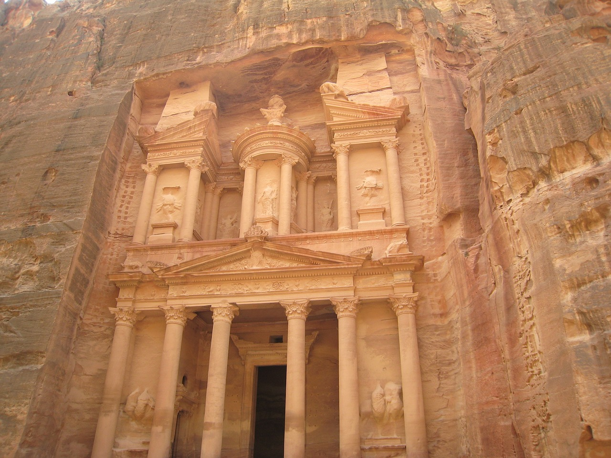
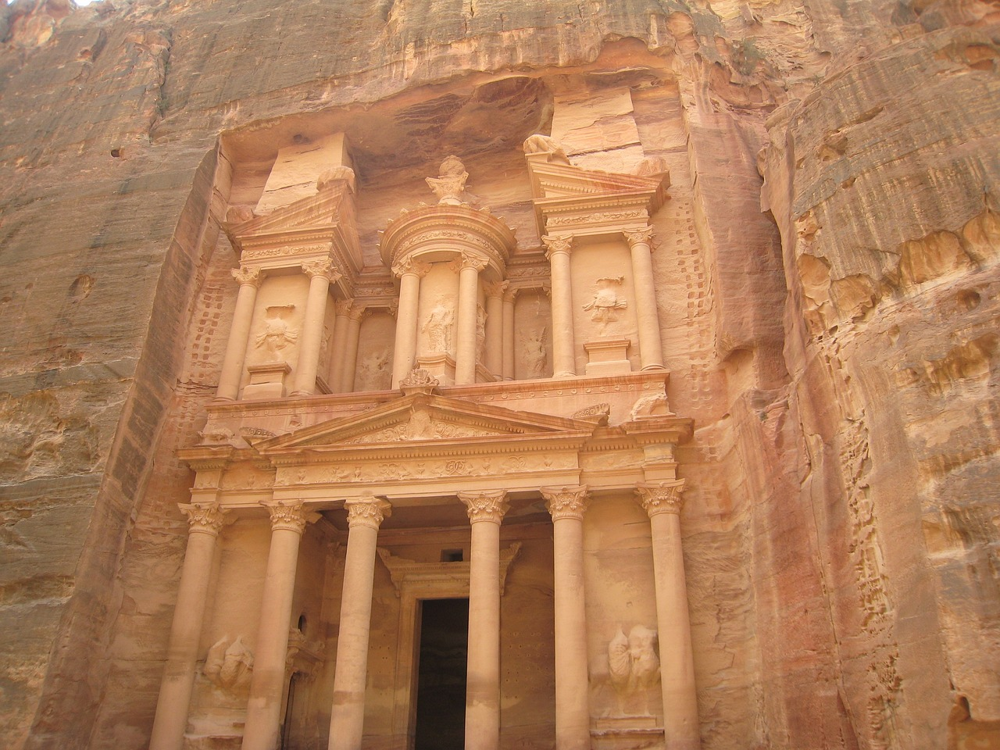

Expedice
Ať už toužíte po dovolené plné dobrodružství, odpočinku na nekonečných plážích, nebo fascinujícím pozorování divokého života, naše expedice výletní lodí mají něco pro každého. Připojte se k nám a objevte krásy světa, které vám dosud zůstávaly skryté.
3
expedice
29
destinací
40 000+
kilometrů cesty
Skrze Evropu až do Ameriky
Připravte se na unikátní dobrodružství, které spojuje kouzlo Evropy s nekonečnými možnostmi Ameriky. Naše výletní lodě vás zavedou do srdce dvou kontinentů, nabízející nezapomenutelnou cestu krásným středozemním mořem a obrovským pacifikem, plnou krás, kultur a dobrodružství.
Více informacíPlavba Pacifikem
Připravte se na dobrodružství, které překonává nekonečné vody Tichého oceánu, spojující západní pobřeží Ameriky s výjimečnými destinacemi v Austrálii, Indonésii a Japonsku. Naše výletní lodě vás zavedou do srdce pacifických kras a nabídnou vám neopakovatelný pohled na tuto fascinující část světa.
Více informacíStarověké kultury
Vydechněte atmosféru Střední Evropy a vydejte se na epickou plavbu, která plynule přechází od historických krajů středního kontinentu k exotickým destinacím podél egyptského pobřeží, indie a kouzelného Madagaskaru. Naše výletní lodě vás provedou nejen krajinami, ale i kulturami, které spojují starověké kořeny a moderní pohostinnost.
Více informacíDestinace
Navštivte našich 14 destinací rozmístěných po celém světě. Každá destinace byla námi pečlivě vybrána s ohledem na jedinečných zážitcích, neopakovatelných krás a kulturním významu, které nabízí. Objevte krásy Afriky, Evropy, Ameriky a exotického Pacifiku, jako nikdy předtím. Ať už máte zájem o tropické pralesy, pouště Egypta či dechberoucí útesy Anglických ostrovů, u nás si vyberete.
Hora Fudži
Socha Svobody
Hollywood
Petra
Chufuova pyramida
Opera v Sydney
Taj Mahal
Eiffelova věž
Koloseum
Krásy přírody Země
Zajímá-li vás potápění a nádhery podmořského světa, nenechte is ujít možnost zašnorchlovat si ve Velkém bariérovém útesu, největším korálovém útesu na světě. Okolní experti vám poskytnou příležitost si zaplavat dokonce i se žraloky a ostatními exotickými druhy ryb.
Pokud milujete vodu, ale potápění není vaše silná stránka, možná vás zaujmou třeba vodopády. Na našich expedicích můžete spatřit rovnou tři světově významné a krásou oplývající. Jedná se o nejslavnější Niagárské vodopády, dále vodopády Salto Ángel a Iguaçu.
Milovníky hor by pak mohla zaujmout hlavně hora Fudži, která je největší horou Japonska, ale hlavně drží také obrovský kulturní význam. Hora Fudži je Japonci totiž považována za posvátný symbol Japonska. Hora vyniká svou perfektní symetrickou siluetou, která je obklopena klidnými jezerami a sakurovými sady.
Památky starých kultur
Obdivovatelé starověkých kultur si s námi definitivně také přijdou na své. Nabízíme několik kulturních památek, které nám tu zanechali předešlé generace. Většinou se jedná o starověké ruiny, města, nebo kulturní symboly.
Machu Picchu je jedno z nejtajemnějších a ohromujících historických míst na světě. Jedná se o starou inkovskou citadelu, která leží na vrcholu horského hřbetu v Peru. Zároveň nabízí výhled na řeku Urubamba, který protéká podél hory.
Dalším úchvatným místem starověké kultury je skalní město Petra, které se vyskytuje v Jordánské poušti. Petra je nejen archeologickým skvostem, ale také místem spojujícím návštěvníky s bohatou historií a kulturou. Překrásné skalní útvary, monumentální hrobky a nádherné výhledy vytvářejí nezapomenutelnou atmosféru, která z Petry činí jedinečné a kouzelné místo na světě.
Skrze Evropu až do Ameriky
Připravte se na unikátní dobrodružství, které spojuje kouzlo Evropy s nekonečnými možnostmi Ameriky. Naše výletní lodě vás zavedou do srdce dvou kontinentů, nabízející nezapomenutelnou cestu plnou krás, kultur a dobrodružství.
Začínáme v srdci Itálie, kde se můžete projít uličkami Říma, obdivovat slavné památky jako je například Koloseum a ochutnat lahůdky slavné italské kuchyně. Pokračujeme do Španělska, kde vás Madrid okouzlí svým uměleckým dědictvím, vášnivým tancem flamenca a pestrými festivály. Dále proplouváme Gibraltarským průplavem, kde se setkávají dva kontinenty. Vychutnejte si úchvatný výhled na skalnatý pevnostní útes a propastný mořský průplav. Další destinací je Portugalsko, konkrétně Lisabon, kde objevíte středověkou architekturu, malebné uličky a nekonečné výhledy na Atlantický oceán. Poté plujeme na sever do Francie, kde se v Paříži seznámíte s romantickými ulicemi, kavárnami, a ikonickými památkami, jako je Eiffelova věž. Pokračujeme do Nizozemska, kde prozkoumáte jedinečné kanály, umělecké muzea a mimojiné relaxující atmosféru Amsterdamu. V Irsku pak můžete vidět nádhernou krajinou a především známé Moherské útesy. Celá expedice poté končí dlouhou plavnou Atlantikem až do nejvýznamějšího Amerického města New Yorku.
Tato expedice je spojením starého a nového světa, nabízejícím neopakovatelné zážitky a vzrušující dobrodružství. Připojte se k nám na této epické cestě, kde se setkávají kontinenty a každá zastávka je novým příběhem k vyprávění.
10
destinací
52
dní cesty
12 778
kilometrů cesty


Plavba Pacifikem
Připravte se na dobrodružství, které překonává nekonečné vody Tichého oceánu, spojující západní pobřeží Ameriky s výjimečnými destinacemi v Austrálii, Indonésii a Japonsku. Naše výletní lodě vás zavedou do srdce pacifických kras a nabídnou vám neopakovatelný pohled na tuto fascinující část světa.
Začínáme v srdci Hollywoodu, kde prozkoumáte slavné pláže, uměleckou scénu a pohlcující atmosféru tohoto amerického města snů. Od tud plujeme obrovským Pacifickým oceánem na jih do Nového Zélandu, kde vás okouzlí zelené krajiny, impozantní fjordy a pohostinnost místních obyvatel. Přicházíme do Austrálie, kde se setkáte s neuvěřitelnou faunou a flórou, bílými plážemi a ikonickými památkami, jako je Operní dům v Sydney. Dále připlouváme k Papui Nové Guineji, kde zažijete pestrost místních kultur, kmenových tradic a fascinujícího spojení s exotickou přírodou. Pokračujeme do Indonésie, kde se setkáváme s exotickými ostrovy, rozmanitými kulturami a podmořským rájem pro potápěče. Plujeme do Malajsie, kde vás možná překvapí moderní města, historické památky a bohatá kulturní scéna. Nadále plujeme do Vietnamu kde zažijete ikonické pestré vietnamské trhy a objevíte nádherné pláže. Poté se přesuneme do Filipín, kde si uděláme dostatečně dlouhou zastávku na bílých písečných plážích s křišťálově čistou vodou a malebnými rybářskými vesnicemi. Naší finální zastávkou bude kulturně bohaté Japonsko, ve kterém se můžete podívat na světoznámou horu Fudži.
Tato expedice představuje spojení různorodých koutů Pacifiku, nabízející neopakovatelné zážitky a pohledy na jedinečné kultury a krajiny. Připojte se k nám na této nezapomenutelné cestě, kde každý přístav je novým dobrodružstvím a každá vlna přináší nový příběh.
9
destinací
72
dní cesty
17 967
kilometrů cesty

Starověké kultury
Vstupte na palubu naší výletní lodě a vydejte se na neuvěřitelnou expedici, která vás zavede od malebných evropských přístavů až po exotické břehy Afriky. Každá destinace na naší cestě představuje jedinečnou kombinaci historie, kultury a nádherných krajin, které vám otevřou nové perspektivy na krásy dvou kontinentů.
Začínáme v obrovském přístavu Lisabonu, kde máte výhled na Atlantický oceán. Naší první zastávkou je ostrov Mallorca kde prozkoumáte bílé pláže, historická města a živou atmosféru ostrova. Poté se přesouváme na Korsiku, kde vás okouzlí divoká příroda, horské vrcholky a pohostinnost korsických vesniček. Pokračujeme na východ do Řecka, kde se ponoříte do antické historie Athén, prozkoumáte slavné památky a ochutnáte tradiční řeckou kuchyni. Proplouváme Tureckem, kde se setkáte s orientálním půvabem Istanbulu, historickými památkami a rozmanitým kulturním dědictvím. Dorážíme do Egypta, kde prozkoumáte starověké záhady ve formě pyramid v Gíze, plujete po Nilu a nasáváte atmosféru tradičního egyptského trhu. Pokračujeme do Jordánska, kde se setkáte s pohlcující krásou historického skalního města Petra a okouzlující atmosférou Ammánu. Pro sptřestření plujeme do Spojených arabských emirátů, kde zažijete luxus Dubaje, tradiční atmosféru v Abu Dhabi a pohostinnost místních obyvatel. Po zažití bohatého luxusu pokračujeme na východ do Indie, kde se setkáte s různorodými kulturami, spirituálními tradicemi a ohromujícími památkami jako je Taj Mahal. Jako předposlední zastávku navštívíme exotický Madagascar plný života a nádherné krajiny a nakonec zakotvíme v Jihoafrické republice, kde můžete zažít rozmanitost místních safari a národních parků.
Tato expedice je cestou k objevování starých kultur, luxusních koutů středního východu a afrických břehů. Připojte se k nám na této nezapomenutelné cestě, kde každá zastávka je jako nový rozcestník ve vašem vlastním dobrodružství.
11
destinací
31
dní cesty
9 315
kilometrů cesty

 

Máte zájem?
Popřípadě si přečtěte odpovědi na nejčastější otázky